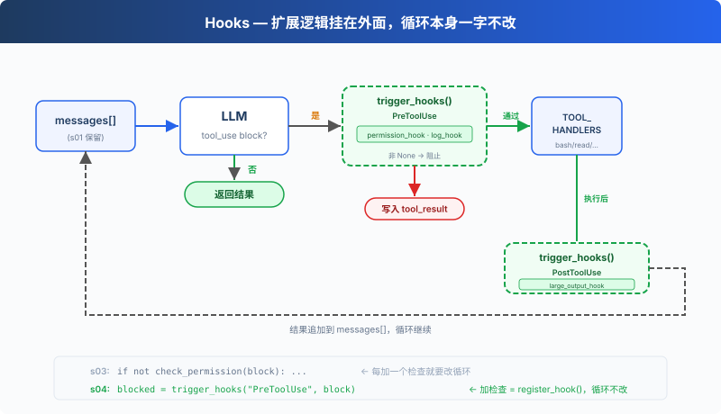

s04: Hooks — 挂在循环上，不写进循环里
s01 → s02 → s03 → s04 → s05 → s06 → ... → s16 → s17
"挂在循环上, 不写进循环里" — hook 在工具执行前后注入扩展逻辑。
Harness 层: hook — 扩展点不侵入循环。
问题
s03 的 Agent 有权限检查了。但每次加一个新检查，比如"记录每次 bash 调用"、"操作后自动 git add"，都要修改 agent_loop 函数。
循环很快就变成了这样：
def agent_loop(messages):
while True:
# ... LLM call ...
for block in response.content:
if block.type != "tool_use":
continue
log_to_file(block) # 加一行
check_permission(block) # 加一行
notify_slack(block) # 又加一行
output = execute(block)
auto_git_add(block) # 再加一行
# ... 很快循环就认不出来了
你想扩展的是 Agent 的行为，但你改的却是循环本身。循环应该是一个稳定的核心，扩展应该挂在外面。
解决方案

s03 的循环和权限逻辑完全保留。唯一的变动是把 check_permission() 从循环体内移到了 hook 上，循环不再直接调用任何检查函数，改为 trigger_hooks("PreToolUse", block)，由注册表决定跑什么。
四个事件，覆盖一个完整的 agent cycle：
| 事件 | 触发时机 | 典型用途 |
|---|---|---|
| UserPromptSubmit | 用户输入提交后、进入 LLM 前 | 输入验证、注入上下文 |
| PreToolUse | 工具执行前 | 权限检查、日志记录 |
| PostToolUse | 工具执行后 | 副作用（自动 git add 等）、输出检查 |
| Stop | 循环即将退出时 | 收尾清理、决定是否继续循环 |
扩展通过 register_hook() 添加，循环只调用 trigger_hooks()。
工作原理
hook 注册表：一个字典，事件名映射到回调列表。
HOOKS = {
"UserPromptSubmit": [],
"PreToolUse": [],
"PostToolUse": [],
"Stop": [],
}
def register_hook(event: str, callback):
HOOKS[event].append(callback)
def trigger_hooks(event: str, *args):
for callback in HOOKS[event]:
result = callback(*args)
if result is not None: # 返回值 ≠ None → hook 说"停"
return result
return None
PreToolUse 返回非 None 时，本次工具执行被阻止；Stop 返回非 None 时，循环继续。UserPromptSubmit 和 PostToolUse 的返回值不参与控制流。
UserPromptSubmit 在用户输入提交后、进入 LLM 前触发。以下 hook 记录当前工作目录：
def context_inject_hook(query: str) -> str | None:
"""Inject current working directory info into every prompt."""
print(f"\033[90m[HOOK] UserPromptSubmit: working in {WORKDIR}\033[0m")
return None # return None = 不修改提示词，直接放行
register_hook("UserPromptSubmit", context_inject_hook)
在主循环中，用户输入后立即触发：
query = input("s04 >> ")
trigger_hooks("UserPromptSubmit", query) # ← 进入 LLM 之前
history.append({"role": "user", "content": query})
agent_loop(history)
PreToolUse / PostToolUse，工具执行前后的 hook。s03 的权限检查逻辑现在包装成 PreToolUse hook，再加一个日志 hook 和一个大输出提醒：
# PreToolUse: 权限检查（s03 的逻辑，从循环移到 hook）
def permission_hook(block):
if block.name == "bash":
for pattern in DENY_LIST:
if pattern in block.input.get("command", ""):
return "Permission denied by deny list"
if block.name in ("read_file", "write_file", "edit_file"):
path = block.input.get("path", "")
if not (WORKDIR / path).resolve().is_relative_to(WORKDIR):
choice = input(" Allow? [y/N] ").strip().lower()
if choice not in ("y", "yes"):
return "Permission denied by user"
return None
# PreToolUse: 日志
def log_hook(block):
print(f"[HOOK] {block.name}(...)")
# PostToolUse: 大文件提醒
def large_output_hook(block, output):
if len(str(output)) > 100000:
print(f"[HOOK] ⚠ Large output from {block.name}")
register_hook("PreToolUse", permission_hook)
register_hook("PreToolUse", log_hook)
register_hook("PostToolUse", large_output_hook)
Stop 在循环即将退出时触发。以下 hook 打印收尾统计：
def summary_hook(messages: list) -> str | None:
"""Print a summary when the loop is about to stop."""
tool_count = sum(1 for m in messages
for b in (m.get("content") if isinstance(m.get("content"), list) else [])
if isinstance(b, dict) and b.get("type") == "tool_result")
print(f"\033[90m[HOOK] Stop: session used {tool_count} tool calls\033[0m")
return None # return None = 允许终止, return string = 强制继续
register_hook("Stop", summary_hook)
在 agent_loop 中，退出前触发：
tool_calls = [
block for block in response.content if block.type == "tool_use"
]
if not tool_calls:
force = trigger_hooks("Stop", messages) # ← 退出之前
if force:
# hook 返回消息 → 注入消息并继续执行
messages.append({"role": "user", "content": force})
continue
return
循环里只改了一处：s03 直接调用 check_permission(block)，s04 改为 trigger_hooks("PreToolUse", block)：
for block in tool_calls:
# s03: if not check_permission(block): ...
# s04: hook 替代硬编码
blocked = trigger_hooks("PreToolUse", block)
if blocked:
results.append({"type": "tool_result", "tool_use_id": block.id,
"content": str(blocked)})
continue
handler = TOOL_HANDLERS.get(block.name)
output = handler(**block.input) if handler else f"Unknown: {block.name}"
trigger_hooks("PostToolUse", block, output)
results.append({"type": "tool_result", "tool_use_id": block.id,
"content": output})
四个 hook 覆盖了 agent cycle 的关键节点：输入→执行前→执行后→退出。循环只负责调用 trigger_hooks()，具体逻辑全在 hook 回调里。
相对 s03 的变更
| 组件 | 之前 (s03) | 之后 (s04) |
|---|---|---|
| 扩展方式 | check_permission() 硬编码在循环里 | HOOKS 注册表 + trigger_hooks() |
| 新函数 | — | register_hook, trigger_hooks |
| hook 回调 | — | context_inject_hook, permission_hook, log_hook, large_output_hook, summary_hook |
| 循环 | 直接调用 check_permission() | 调用 trigger_hooks("PreToolUse", ...) |
| 退出控制 | 无 | trigger_hooks("Stop", ...) 可阻止退出 |
| 输入拦截 | 无 | trigger_hooks("UserPromptSubmit", ...) 可注入上下文 |
试一下
cd learn-claude-code
python s04_hooks/code.py
试试这些 prompt：
Read the file README.md（应该直接通过，观察 hook 日志）Create a file called test.txt（通过后观察 PostToolUse 是否触发）Delete all temporary files in /tmp（bash + rm 触发权限 hook）
观察重点：每次工具执行前，是否出现了 [HOOK] 日志？权限被拒时，是 hook 拦截的还是循环里硬编码的？
接下来
Agent 现在能安全执行操作了。但它有没有停下来想过"我应该先做什么，再做什么"？给它一个复杂任务，它是一上来就动手，还是先列个计划？
s05 TodoWrite → 给 Agent 一个计划工具。先列清单，再做。